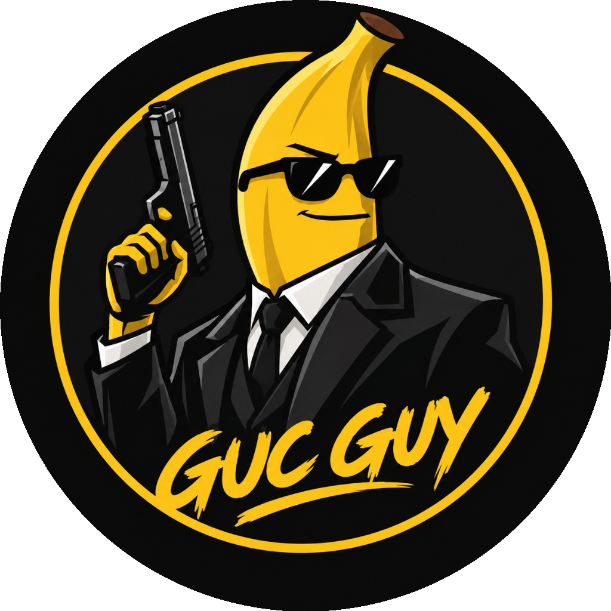

01
Subject / IdentityMultiple images allowed
0
Identity-first AI image studio
Checking your Google sign-in…
No Flow project tab is requiredRun start-mobile-remote.bat once from the Guc guy folder, then create a QR. Keep the QR private; it grants control on this trusted Wi‑Fi.
Add your own subject, outfit and optional starting-frame images. They are uploaded to the new Flow project and attached after their IDs are checked.
Opening pose + fixed camera. Maximum 3 video references. Identity and outfit stay separate.
Qid uses the selected subject and outfit as Flow references. The chosen model must be available on your Flow account.
Matches the body in this image before written figure/tuning. Automatically attached and mentioned as @figure. Remove it to use written details.
Same pose, angle and crop across the batch. Identity and outfit stay separate.
Your figure controls body size even when identity, outfit or pose references are slimmer. Describe overall build as well as any measurements. Body Tuning wins for the same trait; with no figure entered, Classic uses a thick hourglass default without invented measurements.
Identity, wardrobe, environment and aesthetic references stay in their own lanes.
Same pose, angle and crop across the batch. Identity and outfit stay separate.
Select Shadow Slave to add the full cast automatically. Your current cast is saved separately before switching. Alternate looks remain selectable.
Plan a connected short film with consistent cast, wardrobe, locations and 16:9 cinematic stills ready for image-to-video.
Gemini expands your brief into an ordered cinematic chapter and storyboard.
Chapters run in order. Parallel mode allows up to 2 Flow requests in flight with rate-limited starts. Progress is saved after each panel.
For shots with named characters. Identity and outfit stay separate.
Resume continues the saved story. Start over uses the chapter text, queued chapters, characters and settings currently entered above.
PDF saves only when you click Save. Telegram uses your bot settings. Pages break between complete panels; artwork and text stay together.